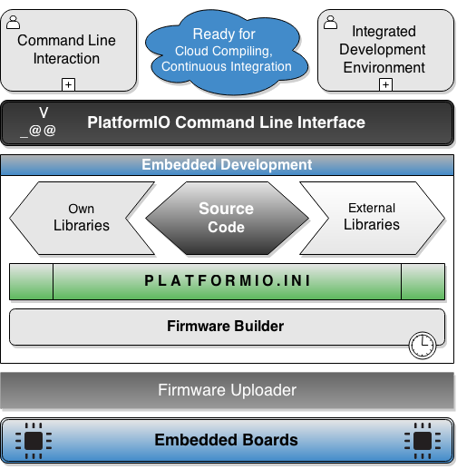

Installeren Arduino ontwikkelingsomgeving
- Arduino IDE
- Visual Studio Plugin
- PlatformIO
Arduino IDE
- Simpelste oplossing
- Barebone
- Meeste tutorials zijn hier op gebaseerd.
- Download here

Visual Studio plugin
- Gekende omgeving
- Windows Only
- Betere code highlighting
- Betere werking met libraries werken
- Download here
PlatformIO
- CLI Based
- Combinatie met jouw favorite text editor
- Ondersteund meerdere embedded platformen
- Steile leercurve
- Download here

Sketches
- Sketches = Arduino programma's
- .ino extensie
- 2 grote componenten
void setup();
void loop();
- Documentatie
Blink Sketch

Blink Sketch
void setup() {
pinMode(LED_BUILTIN, OUTPUT);
void loop() {
digitalWrite(LED_BUILTIN, HIGH); // turn the LED on (HIGH is the voltage level)
delay(1000); // wait for a second
digitalWrite(LED_BUILTIN, LOW); // turn the LED off by making the voltage LOW
delay(1000); // wait for a second
}
Blink Sketch
- setup
- pinMode
- LED_BUILTIN + OUTPUT
- loop
- digitalWrite
- HIGH + LOW
- delay()
Code Uploaden
- Example sketch openen
File > Examples > 01. Basic > Blink
- COM Poort selecteren
Tools > Port > COMX
- Board selecteren
Tools > Board > Arduino Nano / Duemilanove / Uno
Oefening
- Lees volgende documentatie items:
- Laad blink in op de Arduino
- Maak de volgende aanpassing
- Programmeer SOS
- Laad een led branden op een andere pin
- Laat meerdere leds tegelijk branden